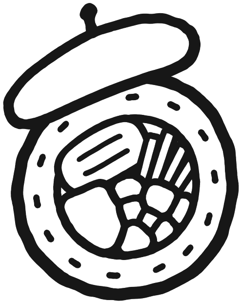

쌍봉로RUE VIALA

쌍봉로 Ssang Bong Lo
파리 15구 김밥(연어, 새우), 돈부리, 비빔밥, 브런치 · Korean restaurant, Paris 15e · 8 rue Viala
덮밥 양념이 맛있음! 김밥도 깔끔.
쌍봉로 먹어 본 기록
- 먹은 것
- 연어김밥, 새우김밥, 소고기덮밥(Beef donburi)
쌍봉로 가게 정보
- 주소
- 8 rue Viala, 75015 Paris
- 인스타그램
- @ssang_bong_lo
- 김밥
- 9.50~14유로
- 돈부리
- 소고기, 연어 타타키, 새우튀김. 18.50유로, 메뉴판 사진
- 비빔밥
- 12.50~15.50유로
- 디저트
- 8.50~12유로
- 그 밖에
- 우동, 샌드위치, 토스트, 바스크 치즈케이크, 빙수, 말차 라떼
- 시간
- 월~토 9:00~17:00, 일 쉼
- 예약
- 단체 주문과 예약은 인스타그램 DM
- 가까운 역
- Dupleix(6호선) 160m, Bir-Hakeim(6호선) 400m
- 에펠탑에서
- 직선 0.9km
- 출처 확인